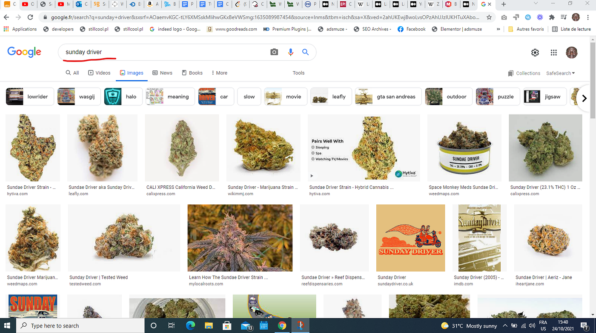

Internet Sunday drivers

Seth has given a very good classification of the type of internets one which is purposefully built for business and the other for people who care and want to be connected with others for doing things that matter maybe without getting any financial advantage in advance. This second internet is the internet of those who have decided to be specific and those who are not running behind the trap of the millions of users, millions of visits and hits per day, or millions of dollars of revenues.
I am in doubt about the impact of the internet on the amplification of the work and message of nonprofits that are engaged in a meaningful mission like closing the gap between poor and rich or making water accessible to everybody on this planet but I am almost sure that it exponentially leveraged the voice of the industrial complex by pushing ads for every clicks and taps generated by an internet Sunday driver like me and maybe you also. But what an Internet Sunday Driver is?
An internet Sunday Driver is this internet user who is looking for something specific, a user who is not hooked on social media mania nor in getting millions of followers, fans, and user but someone who purposely take a path of discovering and amplifying interesting ideas and things that would not get the traction that they deserve without his or her support because content discovery algorithms are not designed for finding and exposing to users singularity of things but rather popularity and commonality. This Internet Sunday Driver who I am describing in this paragraph is an early adopter, a maven, a connector someone who discovers far before other internet things that will be the next internet things. These internet’s Sunday Drivers are those who are more likely to discover and spread this tech-enabled platform about charts that I was writing about in this article and they are also those who contribute to non profit organizations like this one I was writing about in this same article about this tech-enabled platform about charts.
An internet Sunday driver does things like this, I mean reading a blog article of someone whom he cares about and writing on purpose an article that links to this inspiring blog article. That is what I have done with this blog article which is inspired by Seth’s blog article published today and entitled Sunday Driver.
Looking for a photo to put as the featured image of this article made me make a search on google using the keyword Sunday Driver but I was surprised by the images that I got from Google Image Search Like this Sunday Driver keyword is very related to Cannabis

I am not an expert on American culture neither one on English but this link between Sunday Driver and Cannabis is really something strange to me.
PS: this article is part of the publishing experiment My link With